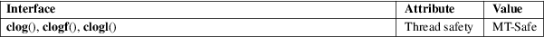

clog, clogf, clogl − natural logarithm of a complex number
Math library (libm, −lm)
#include <complex.h>
double
complex clog(double complex z);
float complex clogf(float complex z);
long double complex clogl(long double complex
z);
These functions calculate the complex natural logarithm of z, with a branch cut along the negative real axis.
The logarithm clog() is the inverse function of the exponential cexp(3). Thus, if y = clog(z), then z = cexp(y). The imaginary part of y is chosen in the interval [−pi,pi].
One has:
clog(z) = log(cabs(z)) + I * carg(z)
Note that z close to zero will cause an overflow.
For an explanation of the terms used in this section, see attributes(7).

C11, POSIX.1-2008.
glibc 2.1. C99, POSIX.1-2001.
cabs(3), cexp(3), clog10(3), clog2(3), complex(7)